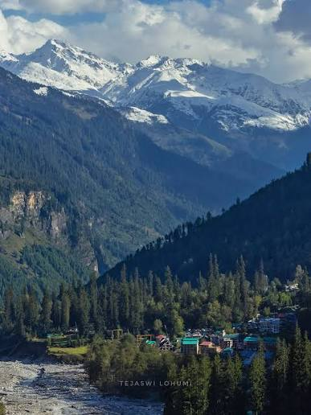

Manali is a beautiful hill station in Himachal Pradesh.
It is famous for its mountains, rivers, and pleasant weather.
Manali is a peaceful place and a popular destination for families, friends, and couples.
Goa is a beautiful coastal state in India.
It is famous for its beaches, nightlife, and Portuguese architecture.
Goa is a popular destination for tourists looking for a relaxing beach vacation.
Jaipur is the capital city of Rajasthan, known for its rich history and vibrant culture.
It is famous for its palaces, forts, and traditional architecture.
Jaipur is a popular destination for tourists interested in Indian heritage and tourism.
